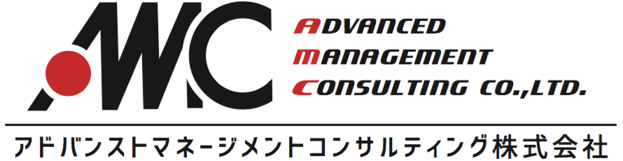
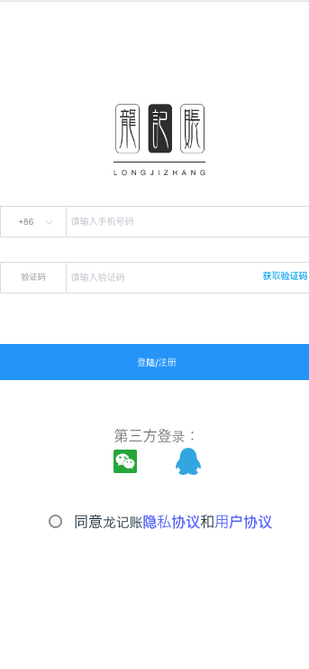

Long的简历
基本信息
- 名字：Long（马文龙）
- 性别：男
- 毕业院校：青岛港湾职业技术学院
- 毕业时间：2014年7月
- 博客：xxsc.club
- GitHub：www.github.com/longjie521
联系方式
- 电话：18353281526
- 邮箱：1170664986@qq.com
- 微信：long_jie0323
- QQ：1170664986
应聘岗位
对日软件开发工程师
项目与工作经验
 株式会社YSLソリューション（2023.08——2023.11）
株式会社YSLソリューション（2023.08——2023.11）
-
ChexWeb開発問い合わせ
横滨出差
作为一个leader性质的商务出差，随身带领一名中国人（日语不是很好，没来过日本那种）
出差主要目的为商讨ChexWeb项目得各性能相关的解决方案和思路（日语），历练一下同行得人，认识一下日本
益世信息技术（杭州）有限公司 && 株式会社YSLソリューション（2019.09——至今）
-
ChexWeb開発
演示内容（经过压缩，可能会闪烁）：
Chex（Chex）为图纸、工程表、作业指示书、施工照片等是将各种各样的文件电子化，从iPad阅览·共享的面向建设业的云服务。
包括但是不限于施工图纸在线阅览以及添加备注，查看施工场地3D模型，将施工现场收集信息即时共享以及可以打印在线阅览模式下的书写的各种备注信息。。。。。
技术栈：vue/php/mysql
1、担任该项目的TeamLeader
2、担任产品、设计、交互、前端、后端多个角色，独自完成平台的设计和搭建；
3、作为与客户交流的窗口，给客户提一些建设性意见以及正确传达客户所表达的信息的（出差日本）
4、为解决Web网页性能问题提供意见和建议，解决性能问题
5、担任新组员的指导工作，对新人教育有一套自己的实践方式。
6、可独立日本出差，争取项目，并且带领新人去体验日本
アドバンストマネージメントコンサルティング株式会社（2018.08——2019.08）
-
残疾人支援系统
演示内容：年代久远，没做备份
由日本政府牵头，搭建的社会残疾人的支援系统，这次开发主要是新追加机能以及画面
使用 Java来实现后台逻辑，使用HTML完成画面的搭建
使用ajax异步请求数据，完成人员定位、支援保障等功能以及前后端数据交互
持续优化相关产品的质量、性能、用户体验
使用Oracle数据库进行数据存储
-
内部项目
演示内容：年代久远，没做备份
社内考勤以及财务管理多方面得ERP管理系统的开发
使用Java和Vue完成，个人负责前端和后台的设计和开发，当时并没有采用前后端分离，而是使用集中式开发，用时两个月
青岛富佳智能科技有限公司（2016.08——2018.08）
-
木门工厂ERP系统
演示内容：年代久远，没做备份
该项目是中外合资的客户公司为了解决传统木门工厂难点所定制的一套管理系统
解决依靠手工纸质单据信息传递不及时导致的工作效率低以及数据信息化掌握不及时，急单大单吃不下等各种问题。
个人主要负责后端的开发，在大框架搭好的情况下进行增删改查的实装工作
-
食品加工ERP
演示内容：年代久远，没做备份
日本老牌企业中国调味料加工子公司为了解决工厂难点问题定制的服务。
解决作业效率低，多部门重复工作，无法轻松掌握最新的在库信息和生产信息等原因造成的交货影响等一系列问题。
个人主要负责后端的开发，在大框架搭好的情况下进行增删改查的实装工作
个人项目
-
个人博客
演示内容（经过压缩，可能会闪烁）：
技术栈：前端Vue2 后台springBoot2 jdk1.8
用于技术分享和总结的个人博客，兼容pc和移动端，用户可通过QQ（微博）认证登录博客，实现点赞以及留言评论回复等功能
支持留言短信通知以及支付宝API接口的调用（个人没有支付宝API调用权限所以没有设置，在沙箱环境中已经实现）
提供各种便捷小工具，比如说在线pdf转excel（陆续追加中）
后端使用Java/Mysql开发
挂在阿里云服务器上，通过Xshell命令行来修改维护修改
-
Long resume
这个简历的源码,设计优雅、内容完善的静态简历页面,可下载world文档
-
个人AI接口管理工具
演示内容（经过压缩，可能会闪烁）：
一个网站集成所有当下主流人工智能AI的访问方式，提供开发思路以级解决一些日常办公所需的小插件功能
独立搭建
-
个人记账软件
画面设计中...
front-end画面实装中...
back-end框架搭建中...
前端使用vue3+vite+Capacitor+...,后端使用springBoot3+Java17+Mysql+redis+....开发
计划挂在阿里云服务器上，通过Xshell命令行来修改维护修改

专业技能
前端
-
HTML/CSS
熟悉Less等CSS预处理和模块化工具
-
JavaScript
ES6,ES7 等 Javascript 新特性
可以使用js封装构造函数类插件及组件
-
框架插件类
前端框架 Vue 全家桶
前端主流 UI 框架 element-ui等
前端构建工具 Webpack 、rollup以及相关插件
后端
-
设计书作成（对日方面）
功能的要件定义属于接触过的状态，没有亲自写过
back-end详细设计可
单体测试式样书做成可
结合测试式样书做成可
-
基础
熟悉Java8新特性，如StreamAPI、lambda表达式等；
熟悉Druid、C3P0、DBCP连接池，和MySQL主从复制、Mycat读写分离与分库分表技术
熟悉HttpClient接口传输及参数加密、双钥签名等接口安全技术
-
框架插件类
了解微服务框架SpringCloud
熟悉分布式文件系统FastDFS的使用
熟练掌握常用开源框架的使用如：
JAVA：Spring MVC，Spring Boot3，SpringSecurity,Spring Authorization Server,MyBatis Plus等
PHP：codeigniter4，composer,Laravel等
PS：了解ThinkPHP等其他插件,可直接上手
-
服务器配置
可以从零开始部署一个网站，可以在服务商控制台配置负载均衡和CDN加速等性能优化举措
熟悉 Linux 常用命令及配置
了解服务器集群技术，并可以配置
掌握Nginx、Tomcat等Web代理服务器的使用、配置；
了解Docker，可以使用Docker部署一些软件
-
开发工具
自己搭建了自己的chatGpt，可以调用各大主流平台得api 熟练使用chatGpt和Claude2等各大厂商智能ai，能有效进行提问提升工作效率
熟悉常用开发工具 IDEA 、Eclipse、SVN、Maven 等
技能证书
-
日语N2证书
-
日语N1证书（备考中）
-
PMP证书（备考中）